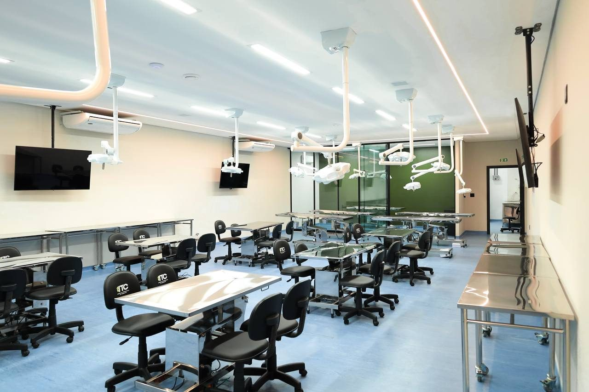

IOA · ITC · Universidade Ceuma
Formação avançada em saúde orofacial, com prática real
Especializações odontológicas e treinamento com cadáveres frescos para profissionais da saúde, em São Luís.
Por onde começar
Quatro caminhos no IOA/ITC São Luís
Especializações
Seis especializações odontológicas divulgadas pela unidade.
Ver catálogoTreinamento ITC
Treinamentos avançados com cadáveres frescos para profissionais da saúde.
Conhecer o ITCEstrutura
Salas de aula, laboratório, auditório e clínica da unidade.
Ver fotosClínica IOA
Odontologia para pacientes, com avaliação gratuita.
Ver serviços
Especializações
Ver todas
Especialize-se com quem é referência na área
Rede IOA
A maior Rede Premium em Educação Orofacial
Números informados pela instituição; referem-se à rede IOA, não à unidade de São Luís.
ITC · Instituto de Treinamento em Cadáveres
O maior Instituto de Treinamento em Cadáveres Frescos das Américas
- Vasos
- Nervos
- Músculos
- Planos anatômicos
- Áreas de atenção

Estrutura
Ver toda a estrutura
Ambientes preparados para a prática


Clínica IOA
Agende sua avaliação gratuita
Implante, ortodontia, tratamento de canal, harmonização facial e outros serviços na clínica da unidade.
Localização
Venha nos visitar
R. Carutapera, 5 – Jardim Renascença · São Luís – MA · 65075-670
Turmas